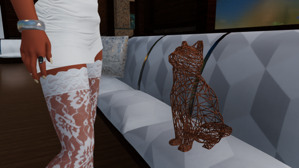
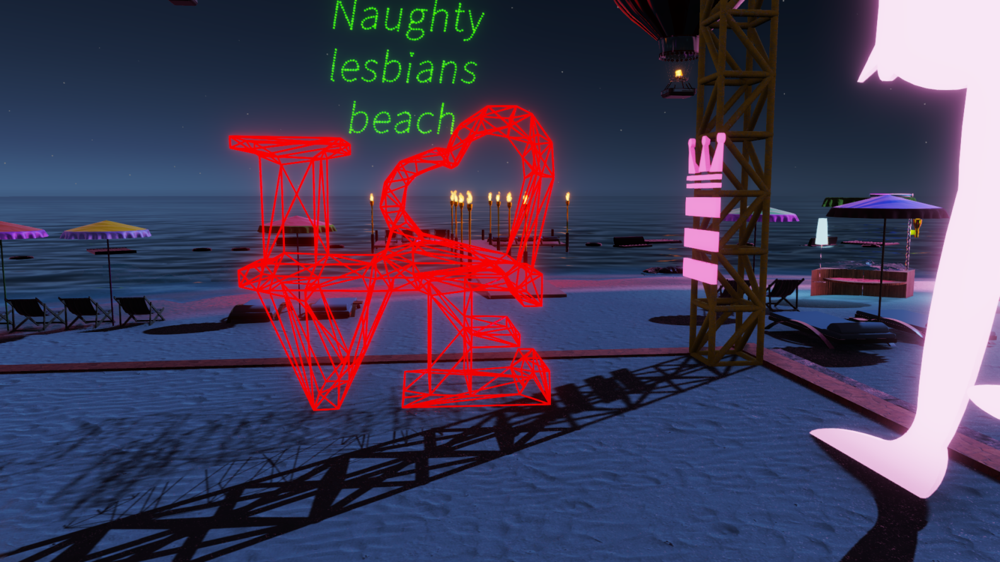
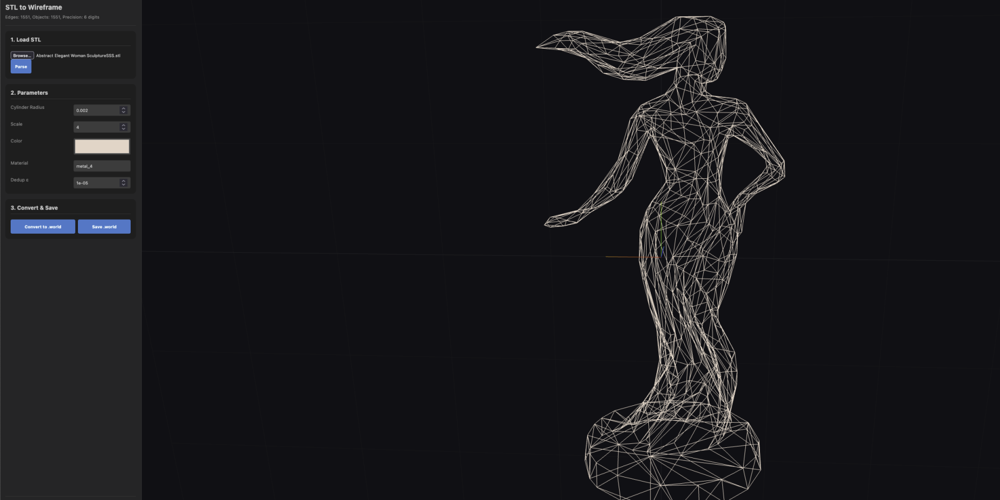
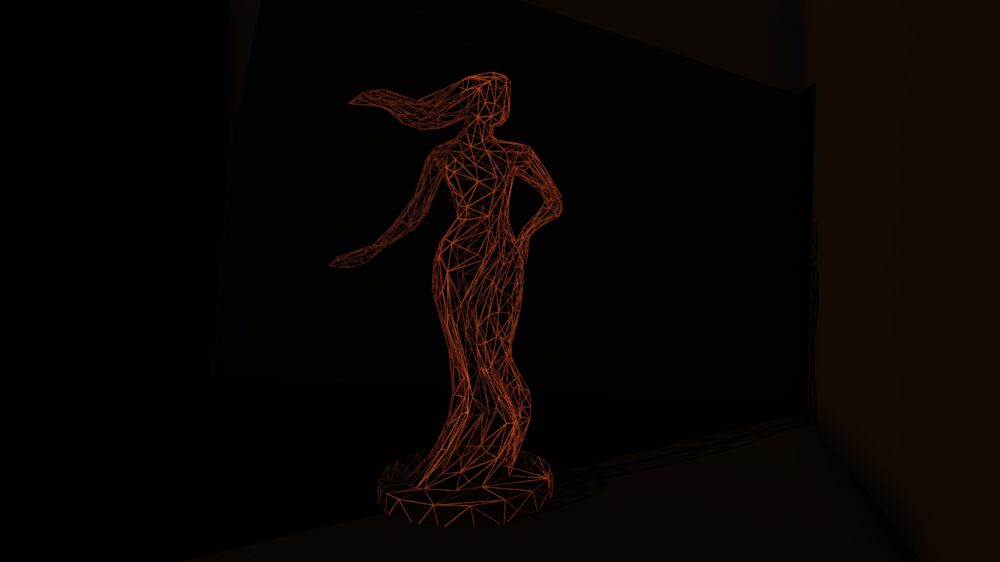
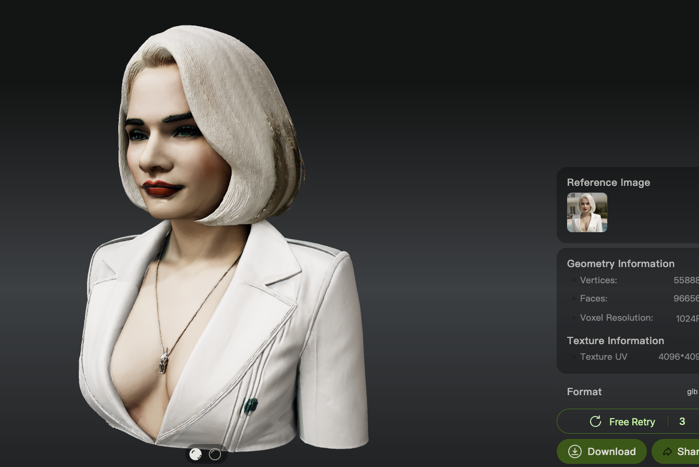
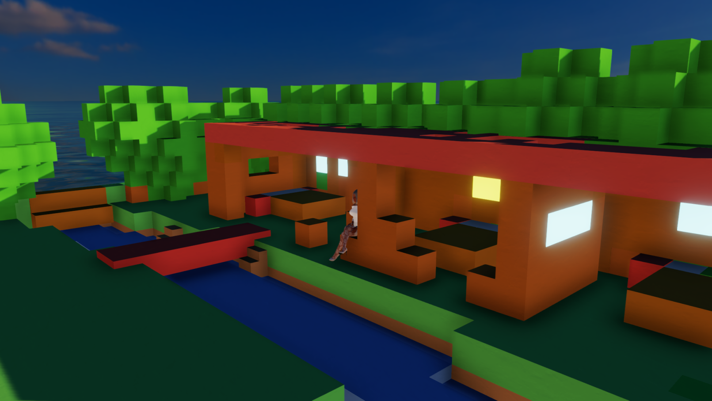

3D objects in STL format → .world Wireframe Converter guide
By Leelove with illustrated steps:
JavaScript required: The converter runs entirely in your browser. If JavaScript is disabled, parsing and conversion won't work. Example STL files are included in the stls/ directory so you can test quickly.


1. What this tool does
This web tool loads an STL mesh in your browser and converts its triangle edges into cylinder-based wireframes, exporting a compact .world file. Use the preview to adjust parameters before saving.
Important: Set the Scale during conversion (the game won't scale it nicely by itself). For small decor objects you can use a very low scale like 0.06. Low‑poly is not mandatory, but heavy objects won't load nicely — aim for an exported .world under 500 KB.
2. Using the web UI
Open index.html in your browser.
Load your STL and click Parse.
Set Cylinder Radius, Scale, Color, Material, and Dedup ε.
Click Convert to .world, then Save .world.

Preview and parameters panel.
3. Make your STL low‑poly in Blender
Blender → File → Import → STL
Select mesh → Modifiers → Add Modifier → Decimate
Lower Ratio (e.g. 0.1–0.5) until topology is simplified but shape remains
Apply → File → Export → STL
Original STL before decimation. Reducing triangles will improve clarity and performance.
Video tutorial: Watch this YouTube video for a step-by-step guide on making STL files low-poly in Blender.
4. Example result

Resulting wireframe after conversion.
Introduction to 3D
Welcome in the real 3D world
The point of this tool, is to open a giga world to 3DX builders. You can :
find for free on internet ready made 3d objects for what you want :
learn how to make your own 3d objects, there is countless YT videos for this.
learn a bit blender as explained in the guide to be able to downsample objects as the game doesn't like big files.
convert a 2D image in a 3D object via AI for any object you want (again a lot of sites possible) like with https://3dserver.hitem3d.ai/
Stl files are the common files for 3D printers so countless stl files are available on internet for free. There is countless 3D objects file formats but at the end to use this tool you need to convert it to stl.
Its very easy with countless 3D fileformat online converters. i will recommand to learn how to import and export 3D objects in blender (free and open source) so u can downsample objects as the game doesn't like big files.

2d to 3d conversion example.
Really crazy thing...
The really crazy thing is that if you know how to code or vibe code this js code and the python version has all necessary maths to do anything in .world. like generating a minecraft world.

Minecraft world generation example.
Everything is made with a cube.
Remember to check if your AI always use decimal numbers and not rounded numbers.
License
CC BY‑NC. Any derivative work must cite the author: Leelove. Pro builder licence is CC BY with a required significant > 20 euros Amazon gift card required